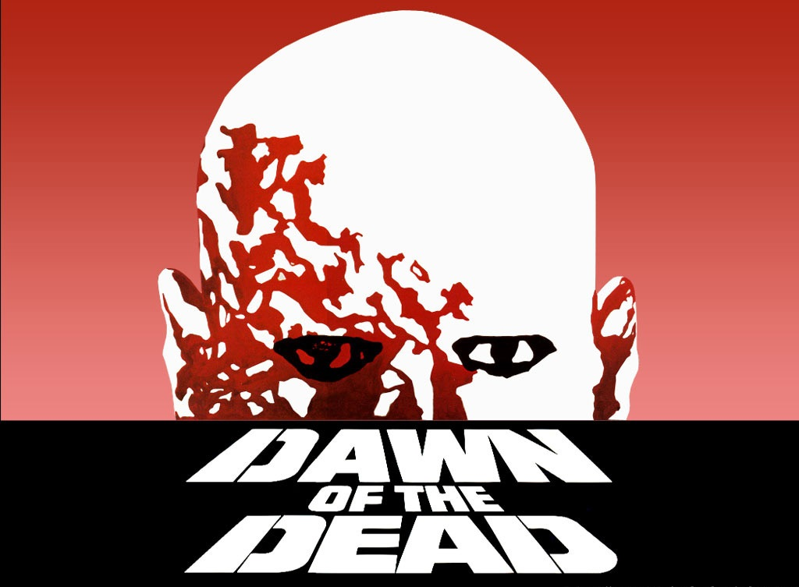

Cauê Abbá
DEV Especialista
Sobre
Olá! Meu nome é Cauê Abbá e sou um aspirante a desenvolvedor fullstack em transição de carreira. Minha jornada começou na área de Administração de Empresas, onde me formei e desenvolvi habilidades sólidas em gestão, organização e visão
estratégica. Com o tempo, descobri minha paixão por tecnologia e programação — e desde então venho me dedicando intensamente a esse novo caminho.
Já concluí cursos de HTML, CSS, JavaScript e Python, e atualmente estou cursando o tecnólogo em Análise e Desenvolvimento de Sistemas. Embora ainda não tenha atuado profissionalmente como desenvolvedor, venho construindo projetos próprios e explorando cada vez mais os desafios e possibilidades do desenvolvimento web.
Meu objetivo é unir minha bagagem administrativa com habilidades técnicas para criar soluções eficientes, funcionais e com foco na experiência do usuário. Este portfólio é um reflexo do meu aprendizado contínuo e da minha vontade de crescer na área de tecnologia.
Desenvolvedor Full Stack & Desenvolvedor Web.
- Idade: 39
- GitHub: https://github.com/caueabba
- Telefone: 11 981126434
- Cidade: São Paulo, SP
- Freelance: Disponível
- Email: caueabba@gmail.com
- Formação: Bacharel em Administração de Empresas
Tecnólogo em Análise e Desenvolvimento de Sistemas
Habilidades
Currículo
Formação Acadêmica
Bacharelado em Administração de Empresas — Mackenzie — 2012
Tecnólogo em Análise e Desenvolvimento de Sistemas — Descomplica — Em andamento
Experiência Profissional
Possuo uma empresa de design gráfico focada na Criação de apresentações profissionais, diagramação de conteúdo visual e soluções gráficas para empresas e empreendedores. Atuação em projetos de comunicação visual, identidade e storytelling corporativo.
Assistente Financeiro — Verzani & Sandrini — Responsável por rotinas financeiras, controle de fluxo de caixa, emissão de relatórios e apoio à gestão administrativa.
Cursos e Certificações
HTML e CSS — One Bit Code
JavaScript — One Bit Code
Python — One Bit Code & Cisco
Projetos Pessoais
Portfólio Pessoal — Site desenvolvido com HTML, CSS, JavaScript e Bootstrap para apresentar meus projetos e trajetória.
[Nome do Projeto] — [Breve descrição do que faz, quais tecnologias usou, e o que aprendeu com ele.]
Habilidades Técnicas
Front-end: HTML, CSS, JavaScript
Back-end: Python (Intermediário)
Ferramentas: Git, GitHub, VS Code, PowerPoint, Beekeeper Studio, Insomnia, Postgres, MongoDB
Idiomas
Português (nativo)
Inglês (avançado)
Espanhol (Intermediário)
Resumo
Cauê Abbá
Sou formado em Administração de Empresas, com experiência no setor financeiro e mais de 10 anos à frente de uma empresa de design gráfico. Atualmente, estou em transição para a área de tecnologia, cursando Análise e Desenvolvimento de Sistemas e me dedicando ao estudo de HTML, CSS, JavaScript e Python. Busco oportunidades para aplicar minha bagagem criativa e analítica no desenvolvimento de soluções web.
- Rua Bimbarra, São Paulo, SP
- (11) 98112-6434-
- caueabba@gmail.com
Formação
Bacharel em Administração de Empresas
2006 - 2012
Universidade Presbiteriana Mackenzie, São Paulo, SP
Tecnólogo em Análise e Desenvolvimento de Sistemas
2024 - 2026
Faculdade Descomplica, EAD
Experiência Profissional
Assistente Financeiro
2010 - 2013
Verzani & Sandrini, Santo André, SP
- Responsável por rotinas financeiras
- Controle de fluxo de caixa
- Emissão de relatórios
- Apoio à gestão administrativa
Design Gráfico
2014 - 2024
Empresa própria - Freelancer, São Paulo, SP
- Criação de apresentações profissionais,
- Diagramação de conteúdo visual e soluções gráficas para empresas e empreendedores.
- Atuação em projetos de comunicação visual, identidade e storytelling corporativo.
Portfólio - Em construção
Aqui você encontrará alguns dos projetos que desenvolvi durante minha jornada de aprendizado em desenvolvimento web. Ainda estou construindo minha trajetória como desenvolvedor fullstack, e este espaço é dedicado a compartilhar minhas experiências, estudos e evolução na área. Todos os projetos apresentados são pessoais e refletem meu empenho em aprender, testar ideias e crescer profissionalmente.
Contato
caueabba@gmail.com
Telefone - WhatsApp
11 981126434